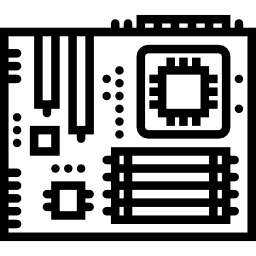

Quem é Wian Santos?
Olá! Muito prazer, me chamo Wian, sou um Dev iniciante a procura de um estágio na área de tecnologia.
Atualmente atuo como assistente de Importação e Exportação.
Sou extremamente curioso, sempre estou querendo saber como as coisas funcionam. Sempre tive uma atração pela área de tecnologia. Durante meu trabalho em comex, me vi em uma situação onde precisava fazer uma planilha completamente automática, nisso eu descobri o Python e essa descoberta me fez perceber o quanto gosto de programar e poder a minha criação sendo utilizada por outras pessoas.
Habilidades
-
Inglês
Avançado
10 anos de cursos (Wizard e CNA)
-
Arduino
Básico
Experiência em programação C# e app Blynk.
-
Pintura Digital - Photoshop
Básico
Experiência com mesa digitalizadora.
-
Responsividade e acessbilidade
Básico
Curso realizado pela Alura.